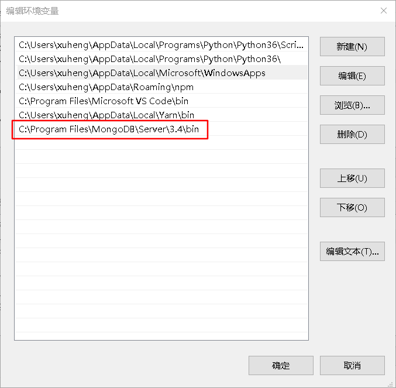
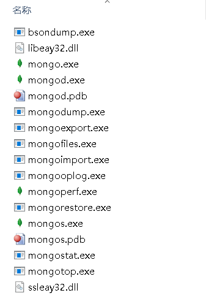
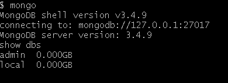
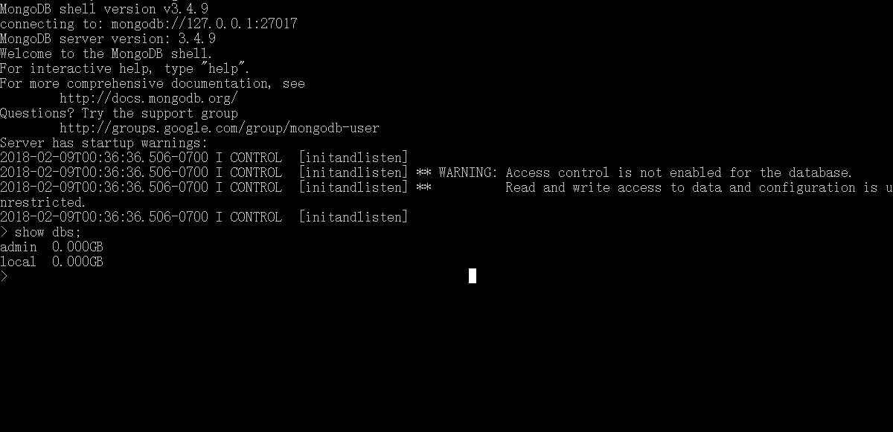

参考文档，菜鸟
mongoDB入门
mongodb使用
下载及安装
按window上的来，下载并安装好到默认路径，并配置好环境变量(这样才能在cmd命令行中打入mongo就能运行)

要用到的命令也就那几个
mongod 打开或创建数据库
mongo 连接数据库才能继续其他操作
mongoimport 导入数据库

创建数据库目录并在命令行下运行 MongoDB 服务器
MongoDB将数据目录存储在 db 目录下。但是这个数据目录不会主动创建，我们在安装完成后需要创建它
名字随便取，就建个db，注意不要放在C:\Program Files\MongoDB下
会提示Invalid command: FilesMongoDBdb
毕竟路径中有空格
换一个位置，换到C:\Users\db下也不行，说是只读 不允许
那就干脆放到D盘下
为了从命令提示符下运行 MongoDB 服务器，你必须从 MongoDB 目录的 bin 目录中执行 mongod.exe 文件。
1 | //改到D:\db |
连接MongoDB(这个是在上面打开服务器的基础上)
我们可以在命令窗口中运行 mongo.exe 命令即可连接上 MongoDB，执行如下命令：
1 | $ mongo |
感觉这个用git bash来操作不好
因为看下图比较, 就是没有提示符了


配置 MongoDB 服务(跳过)
管理员模式打开命令行窗口
创建目录，执行下面的语句来创建数据库和日志文件的目录
1 | mkdir c:\data\db |
主要一个log日志文件，db前面已将创建了
一些常用命令(连接Mongo后)
总结下前面的
1 | mongod: |
最后说下nodejs连接MongoDB